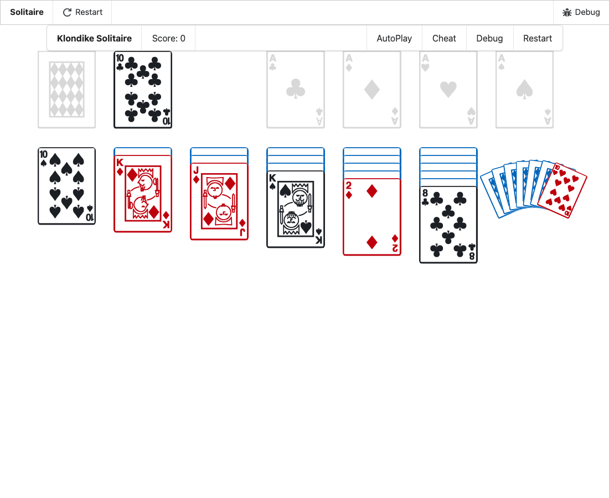

-
In VS Code's main window (the kit's,
spell), open the Explorer (⇧⌘E) and open any file in
spell-app/spaces/@spell/examples/Solitaire/.
-
Open the Command Palette (⇧⌘P) and run:
Spell: Run Project
- Wait for the game to show in the Spell panel.
- Look at the four foundations (top right) before playing anything.
- Click the stock until it's empty.
- Click the empty stock once more.
- Each empty foundation shows a light grey ace of its suit.
- The empty stock shows a light grey card back.
- Clicking it turns the discards back over onto the stock.
